Recicle clicando no lixo e escolhendo a lixeira correta!
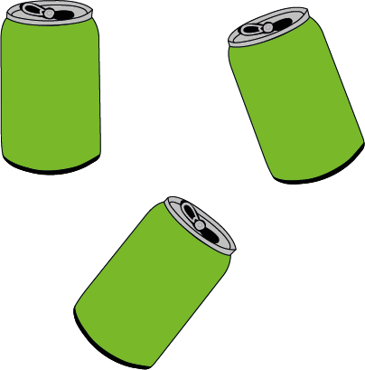
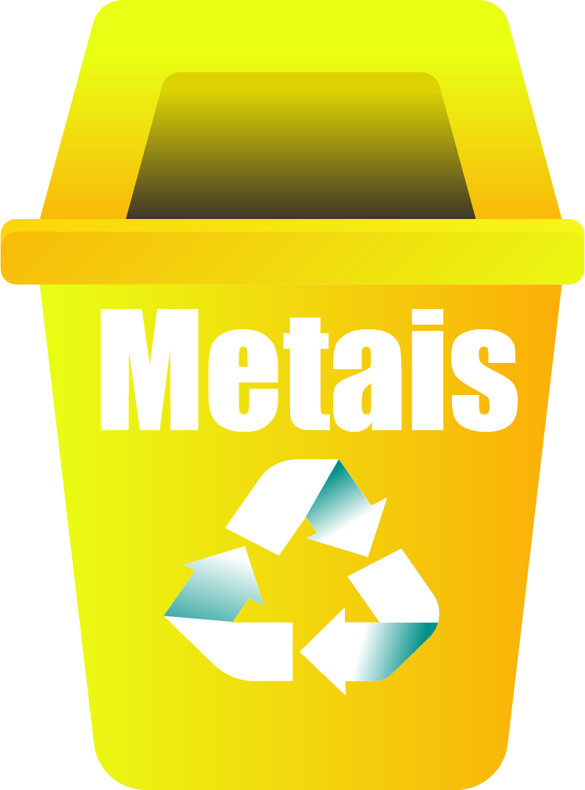 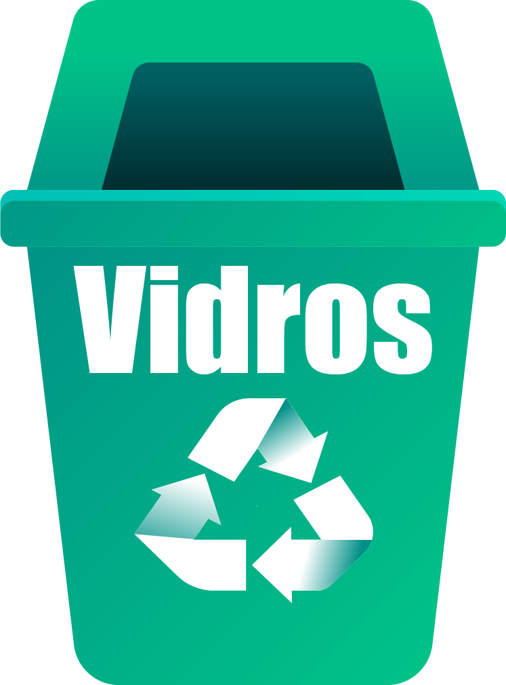
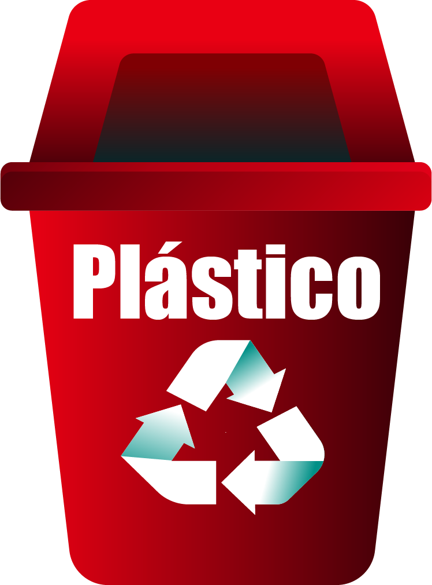
Parabéns!
Essa não é a correta!
Seu navegador não suporta o elemento de áudio.
üîä
Seu navegador não suporta o elemento de áudio.
Seu navegador não suporta o elemento de vídeo.
 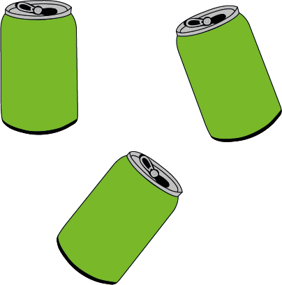
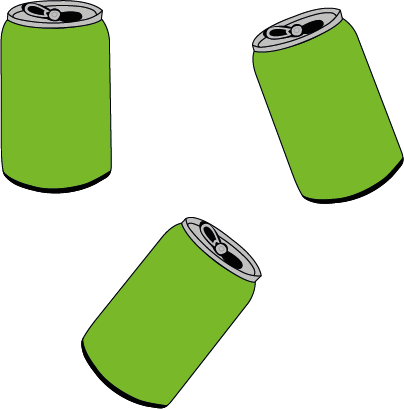


 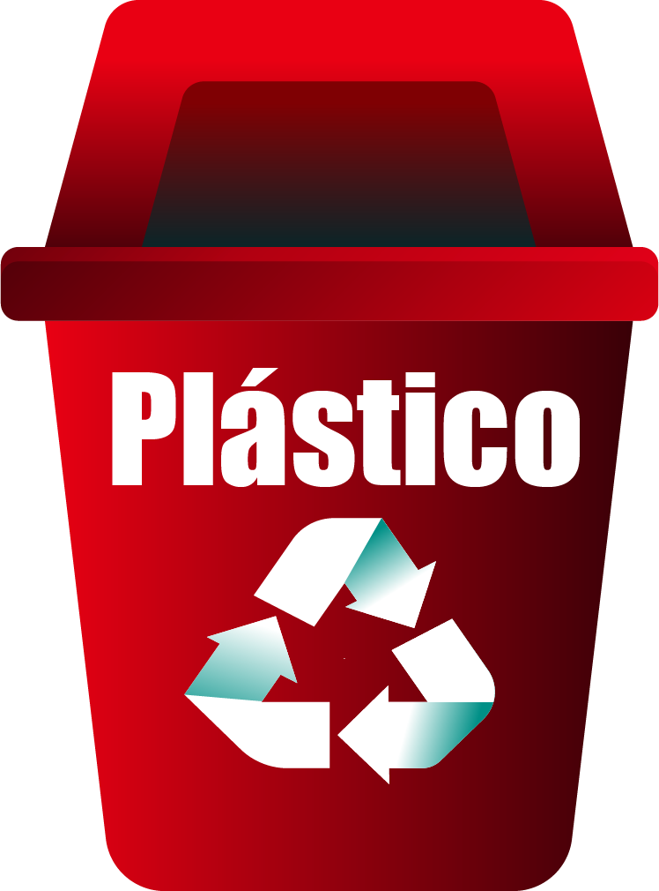
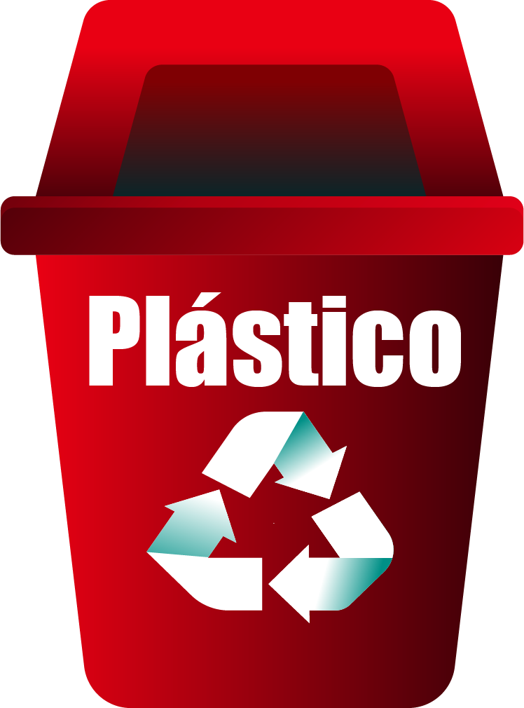
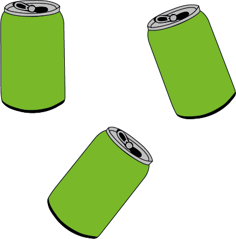
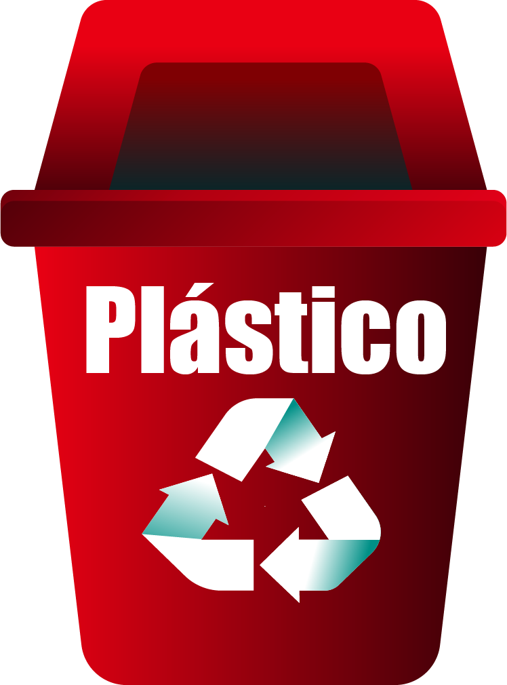
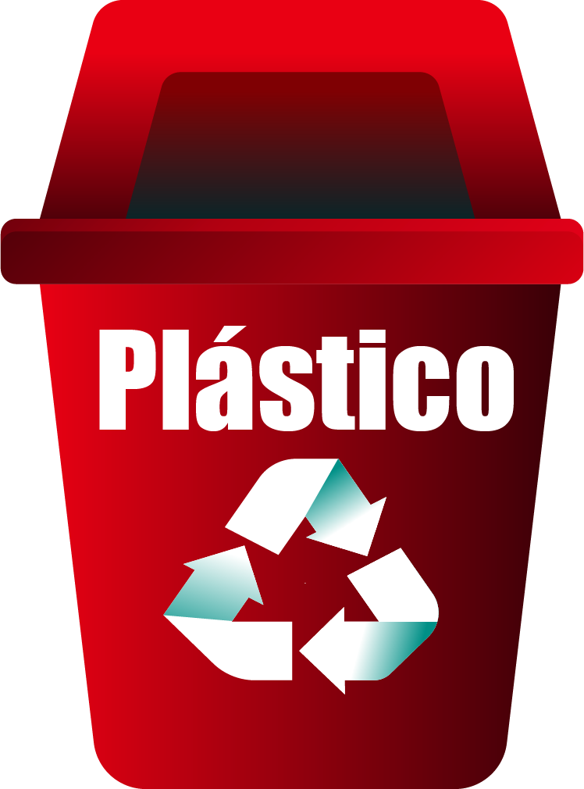
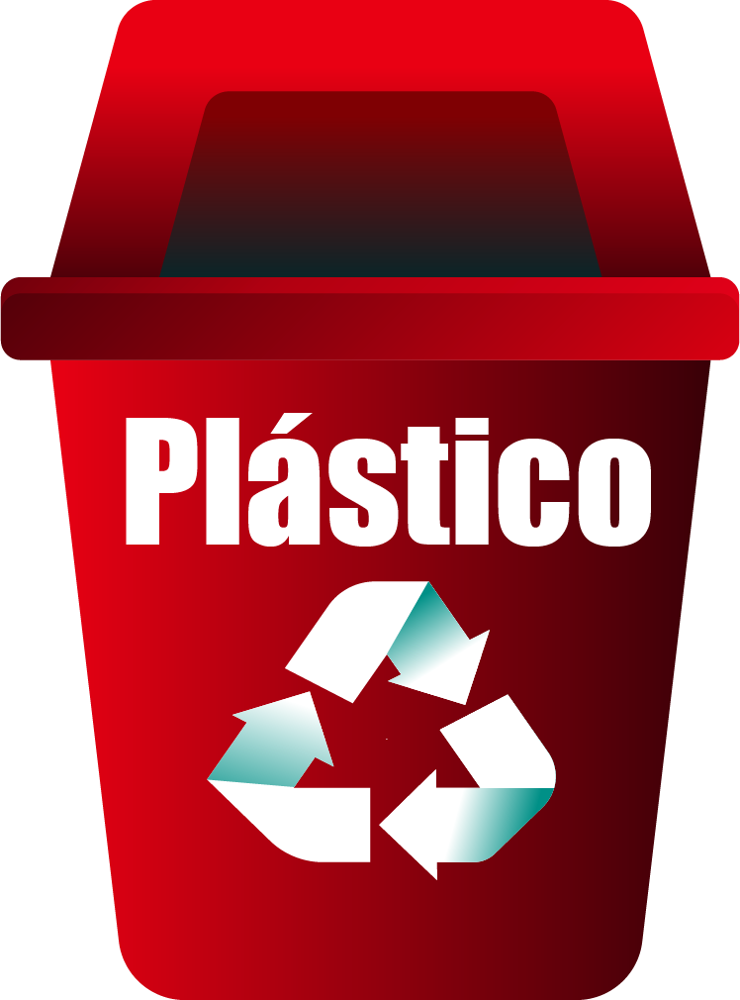
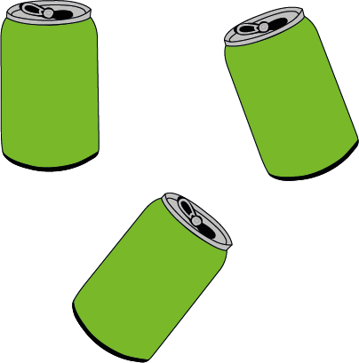
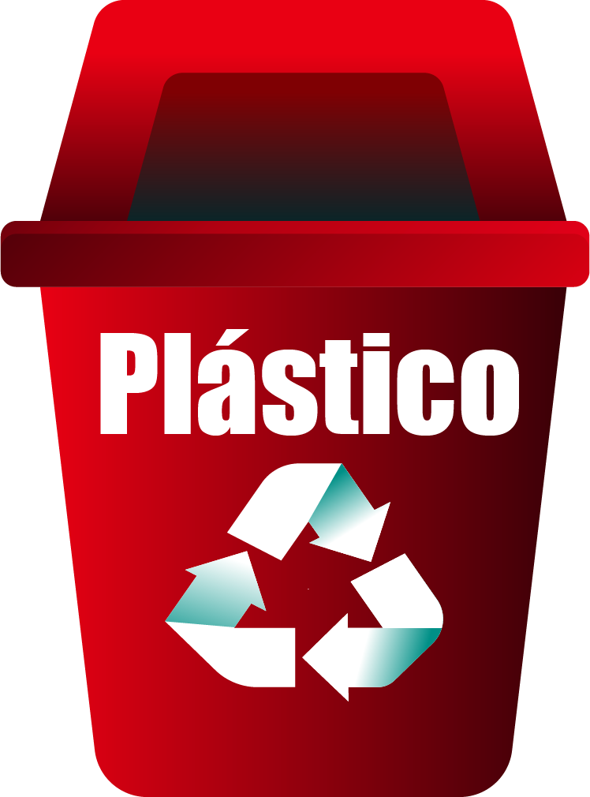